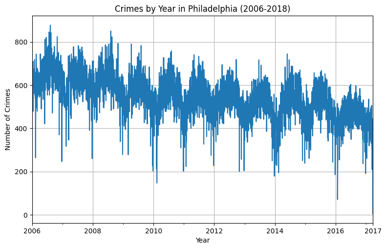
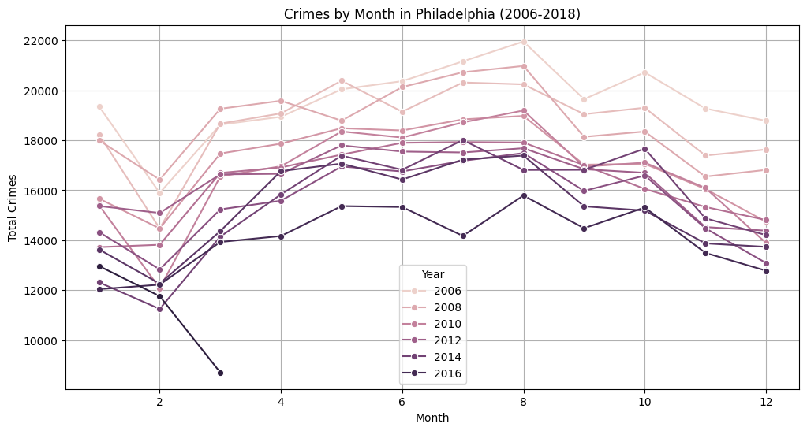
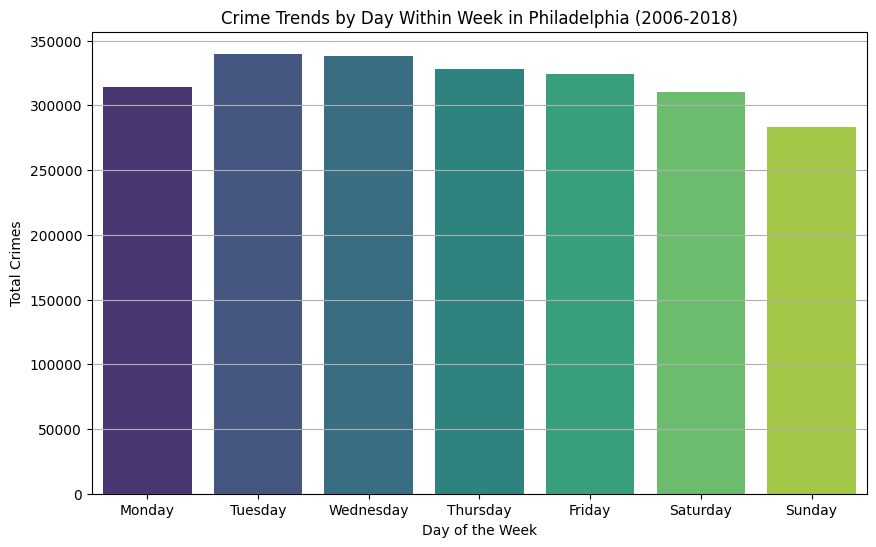
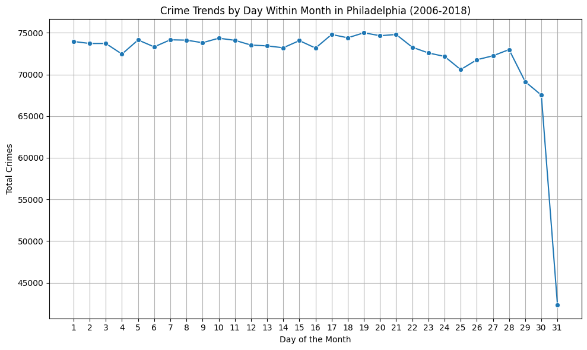
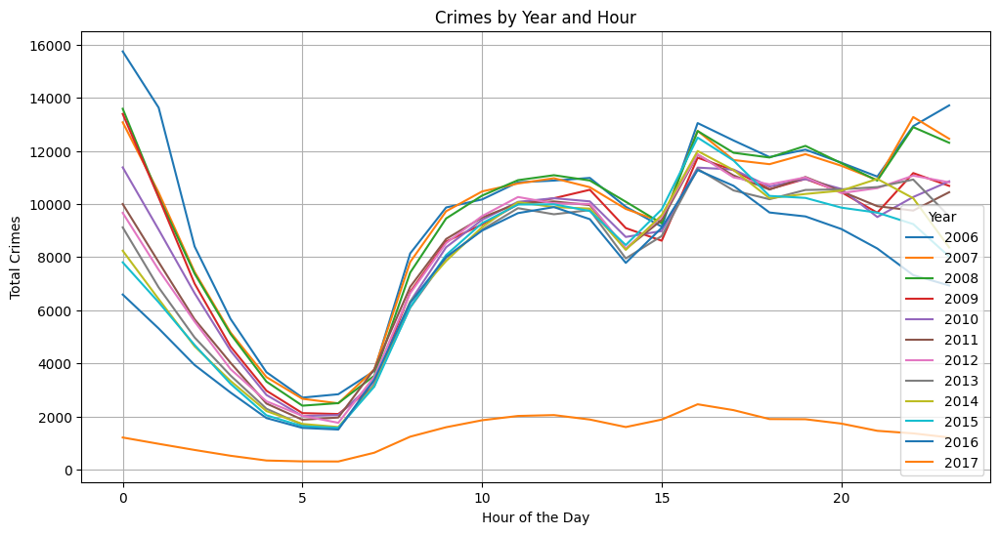
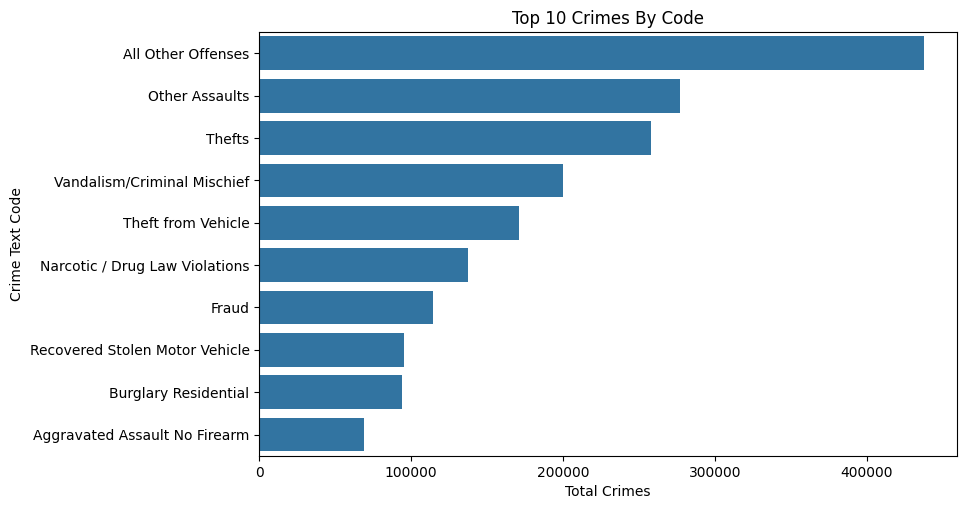
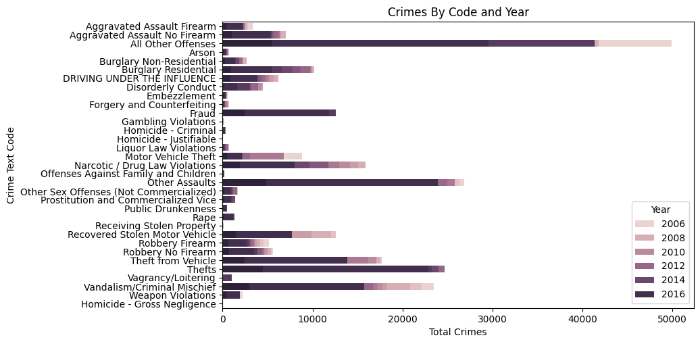

Temporal Analysis of Philadelphia Crime Data (2006-2018)
In this section, we delve into the temporal patterns of crime in Philadelphia, analyzing data spanning from 2006 to 2018. Our objective is to uncover trends over different time scales – by hour, day, month, and year. This analysis will help us understand how crime rates fluctuate over time, revealing patterns that could be pivotal for crime prevention strategies and law enforcement planning.
We will explore: - Hourly Trends: How does crime vary throughout a day? - Daily Trends: Are certain days of the week more prone to crime? - Monthly Trends: What are the monthly variations in crime rates? - Yearly Trends: How has crime evolved over the years?
This comprehensive temporal analysis aims to provide a detailed overview of the dynamics of crime incidents in Philadelphia, offering insights that go beyond mere numbers to understand the rhythm of the city’s safety and security challenges.
Data was provided by https://www.opendataphilly.org/
Quick Overview of Crime Data
import pandas as pdimport matplotlib.pyplot as pltimport seaborn as snsimport geopandas as gpdfrom shapely.geometry import Pointimport numpy as np%matplotlib inlineincidents = pd.read_csv('../data/crime.csv')incidents.head()
Dc_Dist
Psa
Dispatch_Date_Time
Dispatch_Date
Dispatch_Time
Hour
Dc_Key
Location_Block
UCR_General
Text_General_Code
Police_Districts
Month
Lon
Lat
0
18
3
2009-10-02 14:24:00
2009-10-02
14:24:00
14
200918067518
S 38TH ST / MARKETUT ST
800.0
Other Assaults
NaN
2009-10
NaN
NaN
1
14
1
2009-05-10 00:55:00
2009-05-10
00:55:00
0
200914033994
8500 BLOCK MITCH
2600.0
All Other Offenses
NaN
2009-05
NaN
NaN
2
25
J
2009-08-07 15:40:00
2009-08-07
15:40:00
15
200925083199
6TH CAMBRIA
800.0
Other Assaults
NaN
2009-08
NaN
NaN
3
35
D
2009-07-19 01:09:00
2009-07-19
01:09:00
1
200935061008
5500 BLOCK N 5TH ST
1500.0
Weapon Violations
20.0
2009-07
-75.130477
40.036389
4
9
R
2009-06-25 00:14:00
2009-06-25
00:14:00
0
200909030511
1800 BLOCK WYLIE ST
2600.0
All Other Offenses
8.0
2009-06
-75.166350
39.969532
Crime Trends by Year
import pandas as pdimport matplotlib.pyplot as pltfrom matplotlib.dates import DateFormatter# Ensure Dispatch_Date is a datetime dtype and Year is extracted as a separate columnincidents['Dispatch_Date'] = pd.to_datetime(incidents['Dispatch_Date'])incidents['Year'] = incidents['Dispatch_Date'].dt.year# Group by Dispatch_Date and get the count of incidentsby_date = incidents.groupby(incidents['Dispatch_Date'].dt.to_period("D")).size().reset_index(name='Total')# Convert Dispatch_Date from Period to DateTime for plottingby_date['Dispatch_Date'] = by_date['Dispatch_Date'].dt.to_timestamp()fig, ax = plt.subplots(figsize=(9, 5.5))by_date.plot(x='Dispatch_Date', y='Total', ax=ax, legend=False)# Formatting the plot to have a similar style to the R ggplot exampleax.set_title('Crimes by Year in Philadelphia (2006-2018)')ax.set_xlabel('Year')ax.set_ylabel('Number of Crimes')ax.grid(True)# Set x-axis formatter for datesax.xaxis.set_major_formatter(DateFormatter('%Y'))plt.show()

Seasonal Patterns: There seem to be regular fluctuations within each year, which could suggest seasonal trends in crime rates Annual Trends: The plot indicate crime rates have decreased over the years in general
Crime Trends by Month
incidents['Dispatch_Date'] = pd.to_datetime(incidents['Dispatch_Date'])incidents['Year'] = incidents['Dispatch_Date'].dt.yearincidents['Month'] = incidents['Dispatch_Date'].dt.month# Group by Month and Year, and count incidentsmonthly_counts = incidents.groupby(['Year', 'Month']).size().reset_index(name='Total')# Plotting Crimes by Month over the yearsfig, ax = plt.subplots(figsize=(12, 6))sns.lineplot(data=monthly_counts, x='Month', y='Total', hue='Year', marker='o', ax=ax)# Formatting the plot to have a similar style to the R ggplot exampleax.set_title('Crimes by Month in Philadelphia (2006-2018)')ax.set_xlabel('Month')ax.set_ylabel('Total Crimes')ax.grid(True)ax.legend(title='Year')plt.show()

Seasonal Trends: Again, there seems to be a pattern that repeats annually, suggesting seasonal trends in crime rates.
Month-to-Month Variability: seems like in winter there are less crime incidents, the peak happens in August, around summer.
Crime Trends by Days Within a Week
import pandas as pdimport matplotlib.pyplot as pltimport seaborn as snsfrom pandas.tseries.holiday import USFederalHolidayCalendar as calendarincidents['Dispatch_Date'] = pd.to_datetime(incidents['Dispatch_Date'])# Extract day of the week from Dispatch_Date (0=Monday, 6=Sunday)incidents['DayOfWeek'] = incidents['Dispatch_Date'].dt.dayofweek# Group by day of the week and count incidentsdaily_counts = incidents.groupby('DayOfWeek').size().reset_index(name='Total')# Sort the data by DayOfWeek to maintain the order from Monday to Sundaydaily_counts.sort_values('DayOfWeek', inplace=True)# Plotting Crimes by Day of the Weekplt.figure(figsize=(10,6))sns.barplot(data=daily_counts, x='DayOfWeek', y='Total', palette='viridis')# Set the x-axis labels to day namesplt.xticks(range(7), ['Monday', 'Tuesday', 'Wednesday', 'Thursday', 'Friday', 'Saturday', 'Sunday'])plt.title('Crime Trends by Day Within Week in Philadelphia (2006-2018)')plt.xlabel('Day of the Week')plt.ylabel('Total Crimes')plt.grid(True, axis='y')plt.show()
/var/folders/tf/c5gvkllj6dn72kwhbbxxgcm40000gn/T/ipykernel_13175/4114548526.py:20: FutureWarning:
Passing `palette` without assigning `hue` is deprecated and will be removed in v0.14.0. Assign the `x` variable to `hue` and set `legend=False` for the same effect.
sns.barplot(data=daily_counts, x='DayOfWeek', y='Total', palette='viridis')

Did not find a pattern here
Crime Trends by Days Within a Month
incidents['Dispatch_Date'] = pd.to_datetime(incidents['Dispatch_Date'])incidents['DayOfMonth'] = incidents['Dispatch_Date'].dt.day# Group by day of the month and count incidentsdaily_counts = incidents.groupby('DayOfMonth').size().reset_index(name='Total')# Plotting Crimes by Day of the Monthplt.figure(figsize=(10, 6))sns.lineplot(data=daily_counts, x='DayOfMonth', y='Total', marker='o')plt.title('Crime Trends by Day Within Month in Philadelphia (2006-2018)')plt.xlabel('Day of the Month')plt.ylabel('Total Crimes')plt.grid(True)plt.xticks(range(1, 32)) # Set x-ticks to show each day of the monthplt.tight_layout() # Adjust layout to prevent clipping of ylabelplt.show()

Crimes by Hour
incidents['Dispatch_Date_Time'] = pd.to_datetime(incidents['Dispatch_Date_Time'])# Extract Year and Hour from Dispatch_Date_Timeincidents['Year'] = incidents['Dispatch_Date_Time'].dt.yearincidents['Hour'] = incidents['Dispatch_Date_Time'].dt.hour# Group by Year to get the total number of crimes each yearby_year = incidents.groupby('Year').size().reset_index(name='Total')by_year['Percent'] = (by_year['Total'] / by_year['Total'].sum()) *100# Group by Year and Hour to get the total number of crimes for each hour across each yearby_hour_year = incidents.groupby(['Year', 'Hour']).size().reset_index(name='Total')# Plotting Crimes by Hour across Yearsplt.figure(figsize=(12, 6))for year in by_hour_year['Year'].unique(): subset = by_hour_year[by_hour_year['Year'] == year] plt.plot(subset['Hour'], subset['Total'], label=str(year))plt.title('Crimes by Year and Hour')plt.xlabel('Hour of the Day')plt.ylabel('Total Crimes')plt.legend(title='Year')plt.grid(True)plt.show()

Seems like crimes are more likely to happend at night (from 10pm to 1am), it decreases afterwards and reaches the lowest point around 6am in the morning. During the day, it increases again.
Crimes by Code, Crime type
incidents['Dispatch_Date_Time'] = pd.to_datetime(incidents['Dispatch_Date_Time'])incidents['Year'] = incidents['Dispatch_Date_Time'].dt.yearincidents['Hour'] = incidents['Dispatch_Date_Time'].dt.hour# Group by 'Text_General_Code' to get the total number of crimes for each codeby_code = incidents.groupby('Text_General_Code').size().reset_index(name='Total')by_code = by_code.sort_values(by='Total', ascending=False)# Plotting top 10 Crimes by Codeplt.figure(figsize=(9, 5.5))sns.barplot(x='Total', y='Text_General_Code', data=by_code.head(10))plt.title('Top 10 Crimes By Code')plt.xlabel('Total Crimes')plt.ylabel('Crime Text Code')plt.show()# Group by 'Year' and 'Text_General_Code' to get the total number of crimes for each code and yearby_code_year = incidents.groupby(['Year', 'Text_General_Code']).size().reset_index(name='Total')# Plotting Crimes by Code and Yearplt.figure(figsize=(9, 5.5))sns.barplot(x='Total', y='Text_General_Code', hue='Year', data=by_code_year, dodge=False)plt.title('Crimes By Code and Year')plt.xlabel('Total Crimes')plt.ylabel('Crime Text Code')plt.legend(title='Year', loc='lower right')plt.show()


Thefts are the most common type of crimes and it is increasing over years Vandalism is decreasing